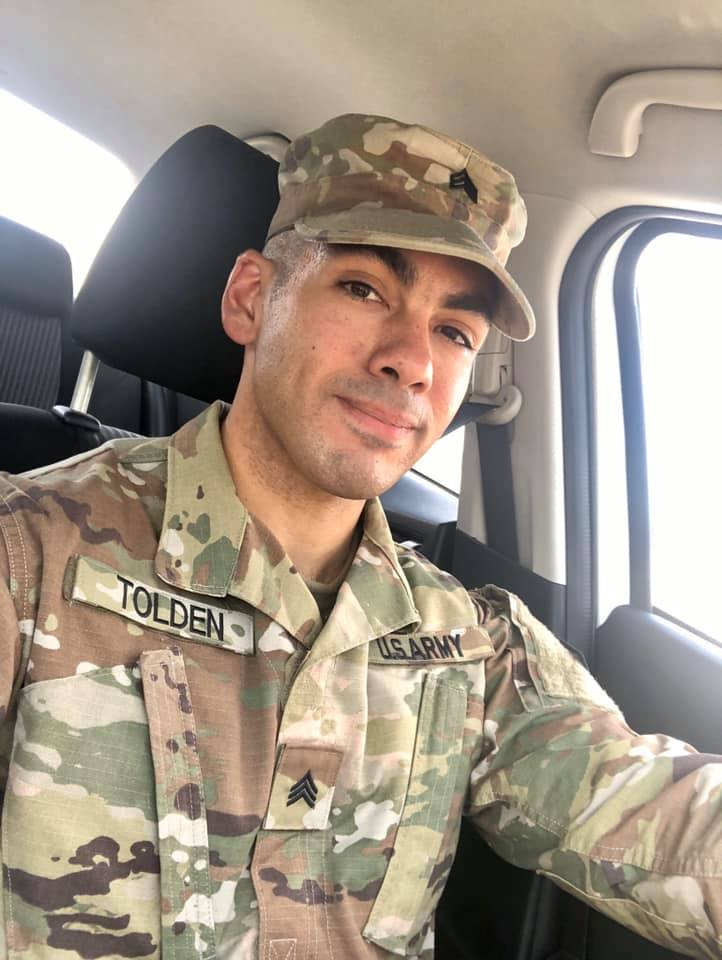
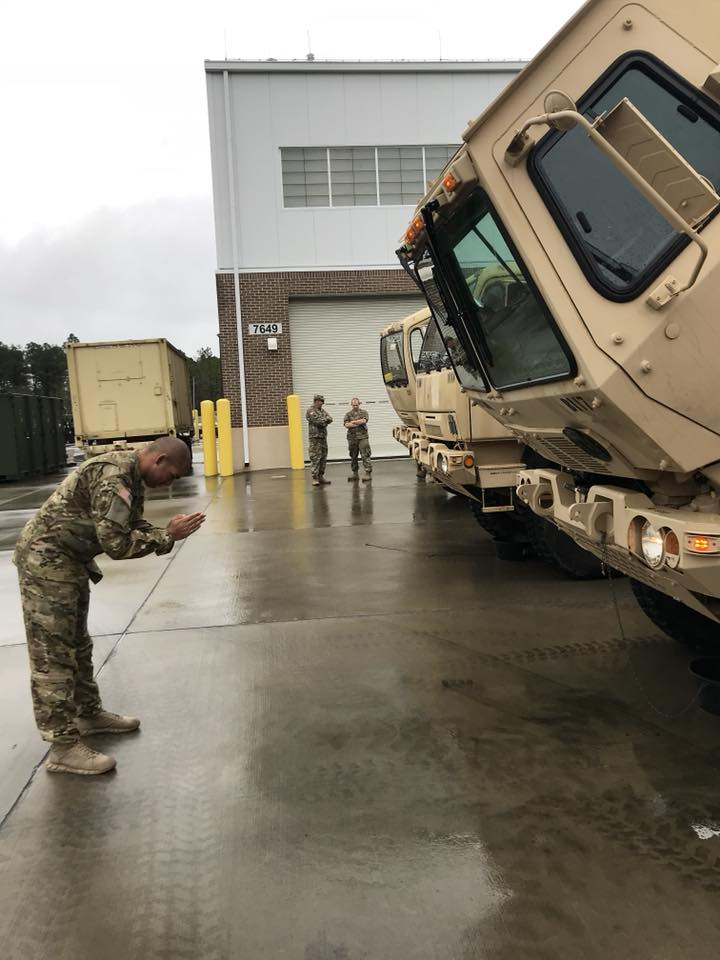
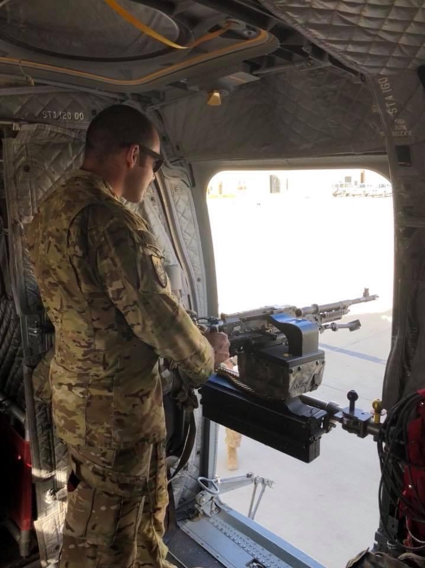
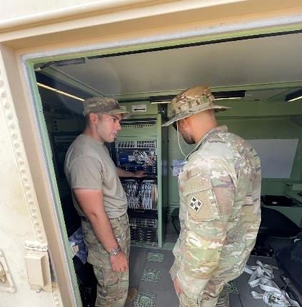
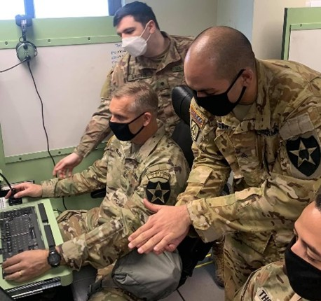
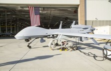

My Story
My journey began in the military, where I served as an MQ-1C Gray Eagle operator. I wasn’t just flying drones; I was part of a team where mission success depended on trust, timing, and technology working in harmony. During that time, I worked alongside engineers who spoke the language of circuits and systems. I found myself wanting to understand the "why" behind the machines we relied on.






After leaving the Army, I pursued electrical engineering to follow that interest. The shift from deployment zones to classrooms wasn’t always easy, but every circuit, simulation, and design project gave me a clearer sense of purpose. Engineering became more than a degree; it became a way to grow, solve meaningful problems, and apply the same discipline I carried in the military to creating technology that makes a difference.
Projects
Highlighted below are seven core engineering projects from my current portfolio, spanning UAV systems, embedded hardware, RF-enabled control modules, advanced electric propulsion, power protection electronics, high-power motor control, and energy-harvesting hardware design.
The Caladrius Project (HAVOC-03) — Complete
Developed a long-endurance fixed-wing UAV during a 10-week rapid RDT&E cycle with a 25-member interdisciplinary team. My contribution focused on CAD, FEA, avionics architecture, and ML-enabled autonomy integration, resulting in a modular, flight-ready platform designed for adaptable mission profiles.
STM32 Bluetooth Developer Board — Complete
Designed and built a custom STM32-based Bluetooth development board using KiCad and STM32CubeMX/IDE. The board was created as a modular prototyping platform with robust power regulation and flexible I/O, strengthening firmware, PCB layout, and wireless integration skills for UAV/IoT-class systems.
Multi-Rotor Axial Flux Motor — In Progress
Collaborating on a high-torque, high-efficiency axial flux motor architecture for EV and UAV propulsion. Work includes iterative electromagnetic and thermal simulation (EMWorks, Elmer, FEMM, SimScale), rotor-stator optimization, and validation of scalable multi-rotor geometry for improved power density.
DRV Power Protection & Monitoring PCB — Complete
Designed a custom 4-layer inline board for 8S DRV motor-control systems to improve protection, sensing access, and serviceability during bring-up and hardware testing. The architecture supports connectorized battery/current/temperature monitoring, high-current routing with thermal separation, and reusable inline fault-isolation for bench validation workflows.
Project highlights: 4-layer board, up to 8S lithium support, connectorized sensing points, and service-oriented inline architecture for faster bench validation and fault isolation.
VESC-Based High-Power ESC — In Progress
Designing a custom VESC-based electronic speed controller targeting up to 600V/600A operation for advanced axial flux motor systems. The architecture leverages SiC MOSFETs, high-frequency switching, thermal-aware PCB design, liquid-cooling integration, and robust sensing/control interfaces for CAN, UART, and encoder-driven applications.